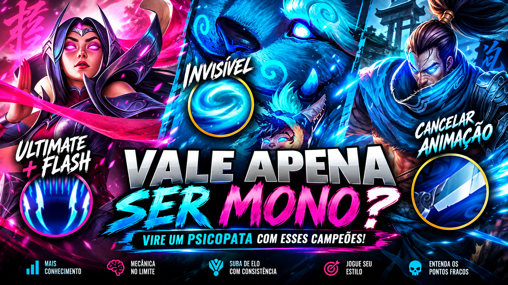
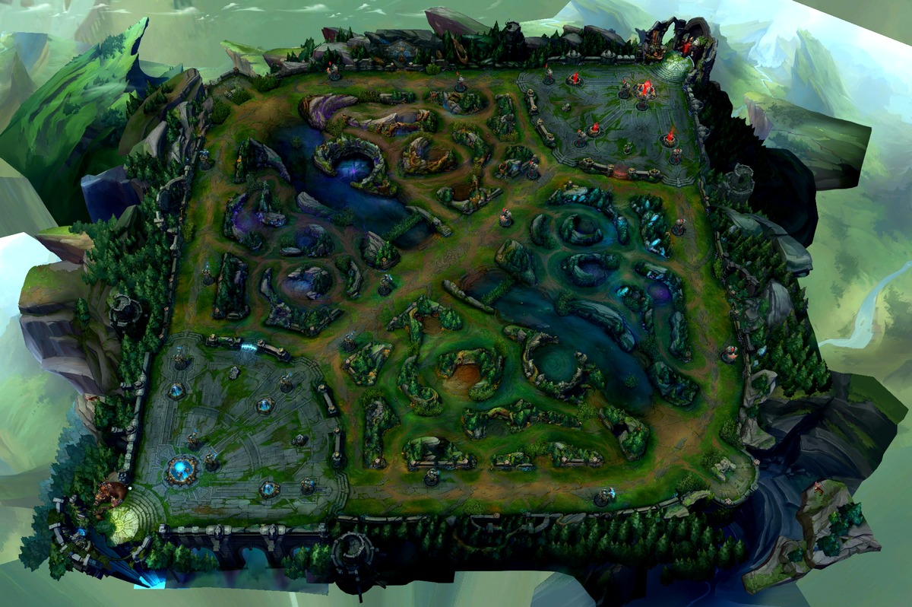

Áudio do Zed
Áudio relacionado ao Zed enviado para o projeto:
Vídeo 1
Conteúdo em vídeo sobre monochampion e League of Legends:
Vídeo 2
Mais um conteúdo em vídeo para complementar o estudo de quem quer dominar um campeão:




Por que dominar um único campeão pode acelerar sua evolução no LoL.
Áudio relacionado ao Zed enviado para o projeto:
Conteúdo em vídeo sobre monochampion e League of Legends:
Mais um conteúdo em vídeo para complementar o estudo de quem quer dominar um campeão:

